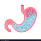

Reflux (Gastroesophageal)
Rx
1.Tab Pantoprazole 40mg N=60 daily
Or Cap Esomeprazole 40mg N=60 daily
Or Tab Famotidine 20 N=120 q12h
+ Syrup ALMgS 15cc N=3 q8h
نکته1: علائم خطر بررسی کنید و از بیمار حتماECG بگیرید
نکته2:اگر علائم خفیف هست میتونین در قدم اول از فاموتیدین شروع کنید.
نکته3: درصورت شدید بودن علائم یا بروز عوارض میتونین پنتوپرازول دوبار در روز بدید
نکته4:اگر بعد 2ماه علائم خوب نشد میتونین یکبار دیگه تکرار کنید .
نکته5: درصورت عدم بهبودی یا وجود علائم خطر ارجاع به متخصص
C Group : ALMgS, Esomeprazole , Pantoprazole
B Group : Famotidine
1️⃣ سوزش سردل فانکشنال
2️⃣ اختلالات حرکتی مری مثل آشالازی، مری فندق شکن ،DES
3️⃣ گاستریت حاد و مزمن
4️⃣ عفونت با هلیکوباکتر
5️⃣ کولیک صفراوی، کله لیتیازیس
6️⃣ هرنی هیاتال
PUD 7️⃣
IBS 8️⃣
9️⃣ ازوفاژیت ائوزینو فیلیک
🔟 بدخیمی
1️⃣1️⃣ مسائل قلبی در موارد درد اپیگاستر
تصویری برای این نسخه موجود نیست.